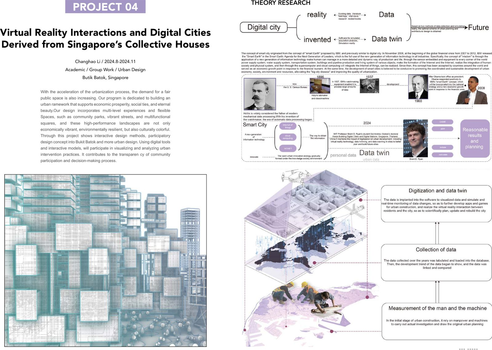
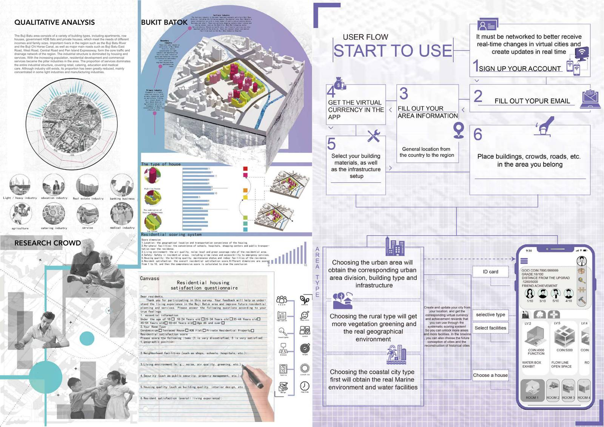
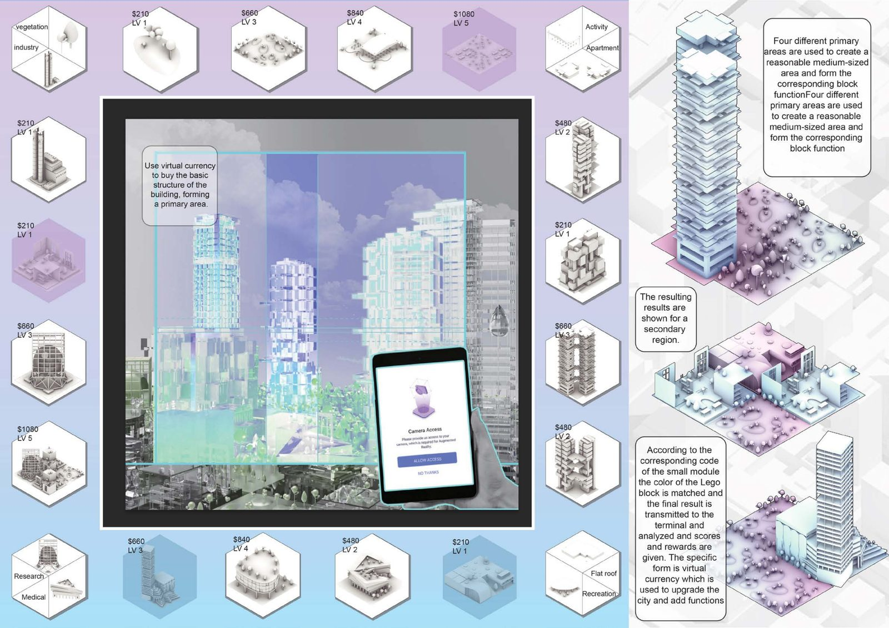

研究 / RESEARCH
从新加坡的集合住宅出发。
Bukit Batok 片区由公寓、联排住宅、政府组屋和私人住宅等多种类型组成，满足不同收入和家庭规模的需求。项目希望在这里营造支持经济活力与社会联系的公共空间：社区公园、活力街道和多功能广场。


交互设计 / INTERACTION
用数字工具和交互模型，让居民参与设计。
方案把参与式设计的理念引入城市设计：借助数字工具和交互模型，居民可以参与可视化、分析城市干预方案，让社区参与和决策过程更透明。
